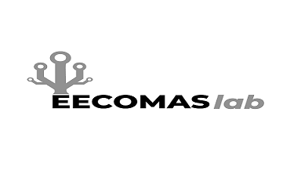

Le laboratoire Recherche en «Electrical Engineering, Computing and Mathematical Sciences » est adossé au Centre d’Etudes Doctorales (CED) intitulé « Sciences et Techniques » de l’université Ibn Tofail, Kénitra, Maroc, autour d’un projet qui s’inscrit dans la politique scientifique de l’université et des établissements associés et répond aux priorités nationales en matière de Recherche Scientifique dans le domaine de des sciences de l’ingénieur.
Le laboratoire EECOMAS est créé le 2016 par un groupe d’enseignants chercheurs rattachés à l’ENSA, Université Ibn Tofail, Kénitra, Maroc. Le laboratoire EECOMAS est dirigé par un Directeur, assisté par un conseil du laboratoire et régi par un règlement intérieur. Le règlement intérieur est adopté par les membres fondateurs du Laboratoire au cours de l’Assemblée générale qui a eu lieu à l’ENSA de Kénitra, le ….. 2016. Ce règlement a pour objectif de préciser les activités de ses structures, l’organisation interne et le mode de fonctionnement du laboratoire EECOMA
Fiche technique :
Fiche technique :
| Intitulé | Electrical Engineering, Computing and Mathematical Sciences – Laboratory (EECOMAS-Lab) |
|---|---|
| Date de création | Juillet 2015 |
| CED d’attache | Sciences et technique de la faculté des sciences |
| Université d’attache | Ibn Tofail |
| Etablissement d’accueil | Ecole Nationale des Sciences Appliquées, Université Ibn Tofaïl |
| Période d’accréditation | 2016-2019 |
| Directeur de laboratoire | M. Taib BELGHITI |
| Contact | Adresse : EECOMAS-Lab, Campus Universitaire, B.P. 241 Kénitra Maroc Tél.: (+212) 5 37 32 94 48 Fax: (+212) 5 37 32 92 47 Web : www.eecomas-lab.edu.ma , mail : contact@eecomas-lab.edu.ma |
| Domaine d’intérêt | Mathématiques appliquées, Informatique critique, Automatique avancée, TICE, Electronique et systèmes embarquées, … |